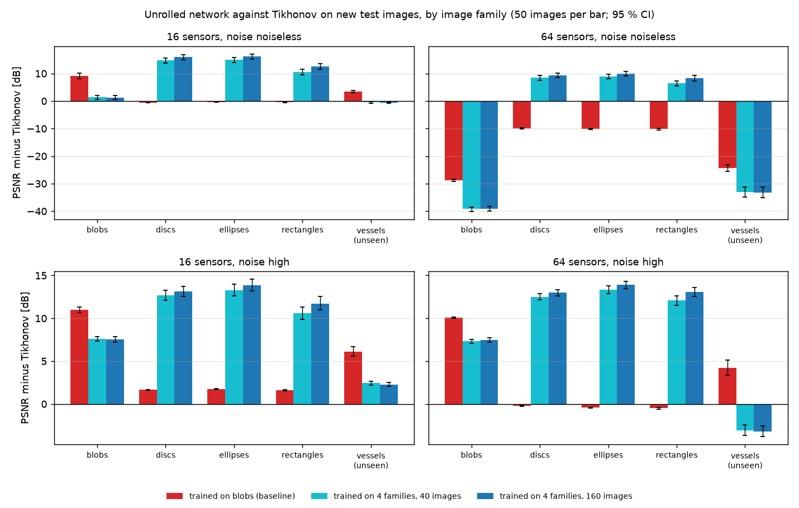
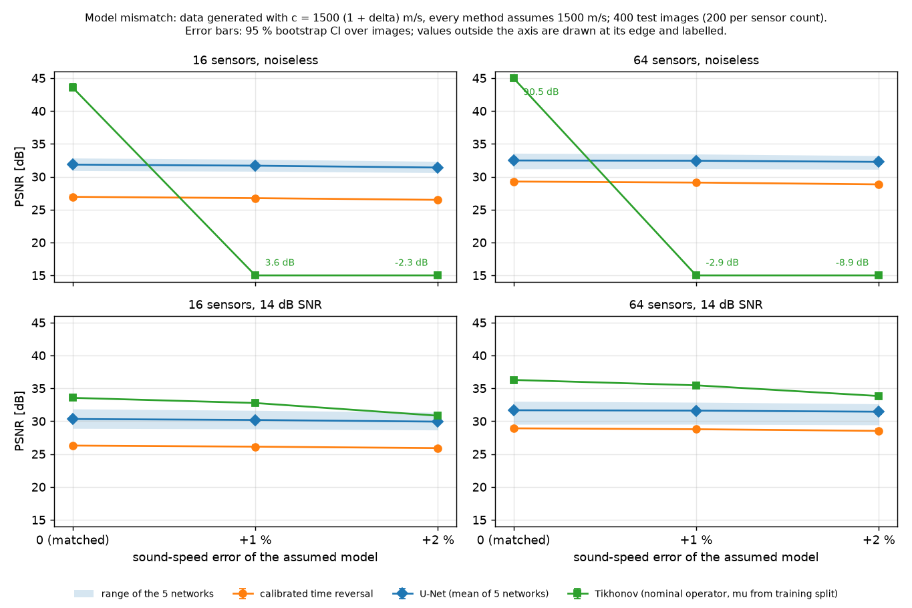

Inverse problems · Imaging
My contribution
I built a synthetic sparse-view pipeline and compared calibrated time reversal, a U-Net refinement, exact-model Tikhonov inversion and an unrolled network, then tested sound-speed mismatch and training-prior shift with mixed-family training and controlled sweeps.
Verified resultsPrior-shift analysis complete · preregistered intervention in progress
An unrolled network trained on four phantom families is 11 to 18 dB ahead of noise-matched Tikhonov on its sharp-edged training families (26 and 14 dB SNR), but 3.2 dB behind it on unseen thin vessels with 64 sensors (14 dB SNR). All data are synthetic.
Problem
Reconstructing the initial pressure distribution of an imaged structure from sparse-view photoacoustic sensor measurements, a PDE-governed acoustic inverse problem in which classical time-reversal reconstruction degrades into streak artefacts as the sensor array is undersampled. The study asks when a learned reconstruction is better than a model-based one, and what that advantage depends on.
Approach
A synthetic acoustic forward model (j-Wave) simulates PML-bounded wave propagation from seeded phantoms on a 64 × 64 grid to a sparse circular array of 16 or 64 sensors. Four reconstructions are compared: time reversal, amplitude-calibrated by one least-squares gain per sensor count; a U-Net that refines the time-reversal estimate; Tikhonov-regularised least squares through the forward simulator written as an explicit matrix; and an unrolled network that alternates a small CNN with exact Tikhonov data-consistency solves. Calibration gains and the Tikhonov weight are fitted on the training split only.
Verification
400 held-out test images and 5 independently trained networks per learned method, with 95% bootstrap intervals over images reported separately from the spread between networks. The Tikhonov matrix reproduces the simulator, and its adjoint, gradient and normal equations are tested. The protocols of the mismatch, unrolled and mixed-family experiments were fixed before their results were seen.
Baselines and the inverse crime
The U-Net improves PSNR over calibrated time reversal by 4.9 dB at 16 sensors and 3.2 dB at 64, with about 2 dB variation between identically trained networks. Tikhonov with the exact forward operator and a weight tuned for the known noise level scores higher than the average U-Net at every noise level, but this is an inverse crime: its noiseless values (43.6 and 90.5 dB) are near-exact inversion of data generated by the same operator, not expected reconstruction quality.
With the data generated at a sound speed 1 to 2% above the assumed value, Tikhonov tuned on noiseless data fails. At 14 dB SNR, with its weight tuned for that noise level, its PSNR lead over the U-Net shrinks to 0.9 to 3.9 dB. Time reversal and the U-Net change by under 0.5 dB.
Learned prior and its limits
The unrolled network trained with noise is 8 to 15 dB ahead of noise-matched Tikhonov at every noise level on the blob test set, without being told the noise level; the exception is noiseless 64-sensor data, where Tikhonov inverts its own model exactly. That margin depends on the training images. On sharp-edged discs, which the network never saw, the lead is gone.
Training the same network on four phantom families together (blobs, discs, ellipses, rectangles) restores a large advantage on all four, at a cost of 2 to 4 dB on blobs under strong noise. The advantage does not transfer to an unseen family of thin vessel-like lines: at 14 dB SNR the mixed network is 2.3 dB ahead of Tikhonov with 16 sensors and 3.2 dB behind it with 64. Going from 16 to 64 sensors improves Tikhonov by 7.4 dB on these images and the network by 1.9 dB, so more sensors help the model-based method more than a network whose prior does not fit the image.


Prior-shift analysis
Two controlled sweeps vary one image property with everything else held fixed and nothing retrained. With 64 sensors at 14 dB SNR, the mixed network moves from 6.0 dB behind Tikhonov on vessels one pixel wide to 7.7 dB ahead on vessels four or more pixels wide, so the vessel failure is one of thin structures. The disc edge-blur sweep is non-monotonic: the mixed network's advantage falls from 13 dB on sharp discs to 1.5 to 2.7 dB at one pixel of blur, then recovers to 7 to 8 dB for smoother edges. The prediction that it would keep its advantage under blur was wrong.
A Mahalanobis distance from the training images, built on seven structural image statistics, correlates with the loss of advantage when families are pooled (Spearman −0.60 and −0.66 for the mixed networks at 14 dB SNR), but within a family it has no consistent sign and it rates the half-blurred discs as close to the training set. It ranks families; it is not a reliable per-image failure detector.

In progress: preregistered intervention
One explanation of the blur valley is that the mixed training set contains one-pixel edges and smooth blob profiles but nothing in between. A follow-up experiment tests this by replacing half of the sharp-edged training images with intermediate edge-blur versions and changing nothing else. Its design, primary and secondary outcomes and success criteria were committed before any network was trained. No outcome is reported here yet.
Limitations
Everything is synthetic: five phantom families, a 64 × 64 grid, two sensor counts, one simulator, i.i.d. Gaussian noise, and one mismatch type (sound speed). Tikhonov's weight uses the known test noise level. Each controlled sweep point is 20 images (10 per sensor count). The edge-sharpness-gap explanation was formed after the sweep was seen, not predicted. In the vessel sweep, width and edge sharpness change together, so that sweep alone cannot separate them. The results characterise this setup, not photoacoustic reconstruction in general.

